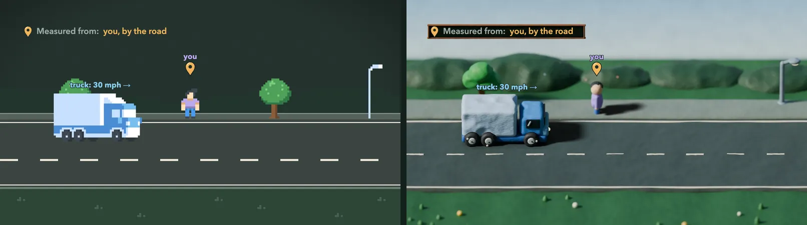

How it was made
The same chapter as the pixel edition: the same narration, the same marks, the same quick checks and practice. Only the picture under it changed.

- Claude wrote the scripts and ran Blender headless. Python for Blender's
bpy, no work by hand in Blender's window: every set, prop and light is built by code, with every setting an argument, so a set can be rendered again on another machine. - Clay, with real light. Every shape is pushed about like modelling clay: slow lumps, thumb dents, tool strokes and fingerprints in the surface. The sets are rendered in Cycles with a sun, soft shadows and the shallow depth of field of a miniature.
- The page moves the clay. Blender renders each set without its movers, and each mover alone with its shadow; wheels, balls, turning pages and strides as strips of angles and poses. The camera is orthographic and never turns, so a sprite the page moves is exactly the frame Blender would render with the thing there.
- Everything you read stays live. Labels, numbers, readouts, the narration's captions and the questions are drawn by the page over the picture: sharp at any size, and translatable.
- Checked to agree. A script measures the picture against the numbers on screen in Chromium and Firefox: speeds against their labels, a ball's turn against the distance it rolled, which way the Earth spins, labels kept off the edges; more than 400 checks.
47 pictures1.8 MB of clay plates, sprites and strips for the whole chapter
~15 minto render every set on an Apple M1 laptop (Cycles, 48 samples)
1,900 linesof Python: the clay kit, the sets, the check
2.6 MBof narration, the same as the pixel edition